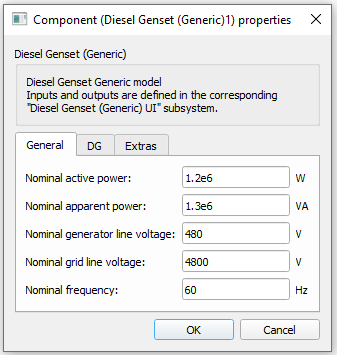
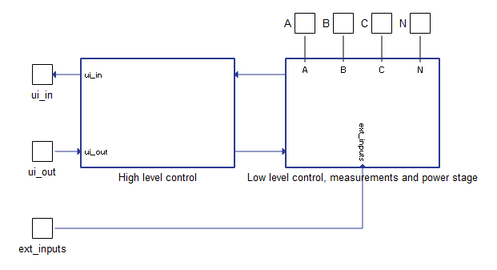
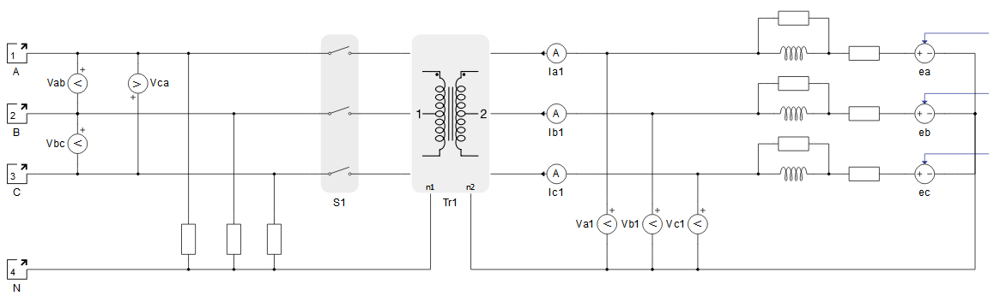
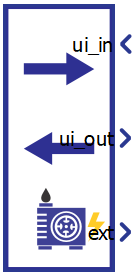
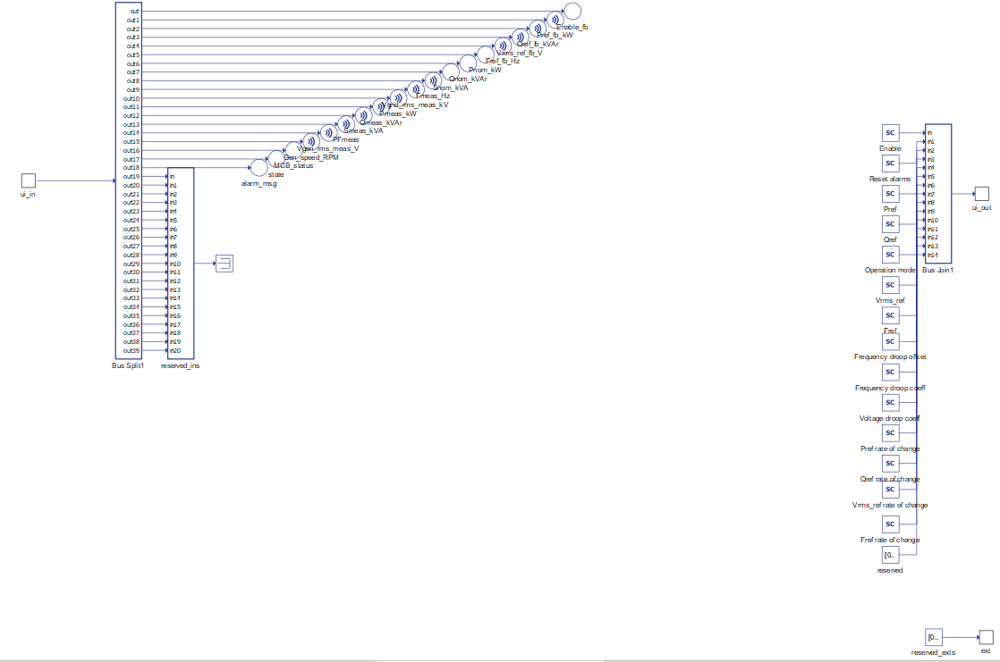
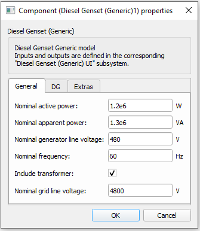
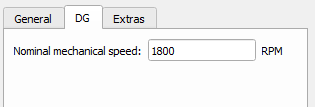
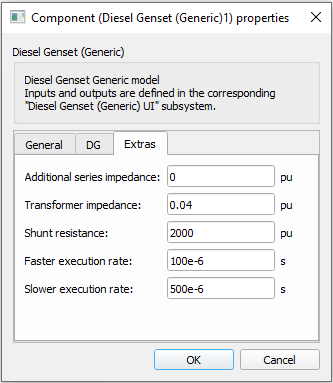

Diesel Genset (Generic)
Description of the Diesel Genset (Generic) component in Schematic Editor.
The Diesel Genset (Generic) component, shown in Table 1, is a Schematic Editor library block from the Distributed Energy Resources section, of the Microgrid library. It is capable of operating in isochronous, droop and grid following mode.
| component | component dialog window | component parameters |
|---|---|---|
 Diesel Genset (Generic) |
 |
|
Diesel Genset (Generic) block diagram
The component consists of two main parts: a high level control subsystem and a low level control subsystem with a power stage and necessary measurements included.

High level control contains:
- Ramping elements - Limit the ROC (rate of change) of the active power reference, reactive power reference, voltage reference, and frequency reference. The rate of change for each function is configured through a corresponding input signal.
- Frequency droop functionality - Calculates frequency reference signal when droop control mode is activated. This control unit is described in the documentation for the Frequency droop in generic DER components.
- Voltage droop functionality - Calculates voltage references signal when droop control mode is activated. This control unit is described in Voltage droop in generic DER components.
- Main state machine - Controls and checks overall functionality of the plant. Operational plant states are described in Table 6.
Low level control subsystem main parts:
- Synchronization control block - Consists of required logic and controller to synchronize the genset to an existing power grid with respect to voltage magnitude and frequency.
- PQ Control block - Contains regulators for active and reactive power control when the diesel generator is connected to the grid. The PQ Control block receives power references and measured powers after the transformer (grid side). This control block is active in grid following mode of operation.
- Voltage/Frequency control - Contains regulators for direct control of the generator voltage and frequency output. Inputs signals to control block are the reference and measured values of the generator stator (before transformer) voltage and frequency. This control block is active when the genset is working under grid forming or droop control operating modes.
- Fault state machine - Checks all measurements, signals the fault state, and sends an alarm message. It also immediately opens the MCB (main circuit breaker) on any detected fault. A list of implemented faults is shown in Table 7.
Diesel Genset (Generic) power stage
The power stage is shown in Figure 2. The main elements include the VBR model of the synchronous generator, transformer and the MCB that connects the plant to the grid. The transformer can be excluded from the power stage if it is not necessary. Power stage elements are parametrized from the component dialog box.

Diesel Genset (Generic) inputs and outputs
This component has one user interface input, one user interface output and one external input. The user interface input and user interface output are each arrays of 40 elements, while the external input is an array of 5 elements. Table 2 describes the input signals and their order, while Table 3 describes the output signals and their order. Lastly, Table 4 describes the external diesel generator input signals and their order.All these signals are also defined in the corresponding Diesel Genset (Generic) UI subsystem with built-in Probes (for output signals) and Scada Inputs (for input signals), as shown in Table 5. These signals were split and joined by properly configured DER (Generic) Output Split and DER (Generic) Control Join components. The Diesel Genset (Generic) UI subsystem is located in the same place in the Schematic Editor library as the Diesel Genset (Generic) component, and it can be unlinked from the library and adopted to your specific needs. Unit [pu] is associated to nominal values, which are either inserted as general tab parameters or derived from them.
| Number | Input | Description | Signal range | Default value |
|---|---|---|---|---|
| 0 | Enable | A digital input that enables the genset operation. The Genset is enabled when the input value is high. | 0 or 1 | 0 |
| 1 | Reset alarms | A digital input that resets alarms if the Genset is in a fault | 0 or 1 | 0 |
| 2 | Pref | An analog input that is the active power reference. This reference is active in grid following and droop mode. [pu] | 0 | |
| 3 | Qref | An analog input that sets the reactive power reference. This reference is active in grid following and droop mode. [pu] | 0 | |
| 4 | Operation mode | An analog input that sets the operation mode of the Genset. Available modes and
their respective codes are:
|
0 or 1 or 2 | 0 |
| 5 | Vrms_ref | An analog input that sets the voltage reference. This reference is active in isochronous mode of operation. [pu] | > 0 | 1 |
| 6 | Fref | An analog input that sets the frequency reference. This reference is active in the isochronous mode of operation. [pu] | > 0 | 1 |
| 7 | Frequency droop offset | An analog input that sets the offset for frequency in frequency droop control mode. [pu] | 0 | |
| 8 | Frequency droop coeff | An analog input that sets the frequency droop coefficient for the frequency droop control mode [%] | [0, 100] | 2 |
| 9 | Voltage droop coeff | An analog input that sets the voltage droop coefficient for the voltage droop control mode [%] | [0, 100] | 4 |
| 10 | Pref rate of change | An analog input that sets the rate of change of the active power reference ramping. [pu/s] | >= 0.001 | 0.1 |
| 11 | Qref rate of change | An analog input that sets the rate of change of the reactive power reference ramping. [pu/s] | >= 0.001 | 0.1 |
| 12 | Vrms_ref rate of change | An analog input that sets the rate of change of the voltage reference ramping. [pu/s] | >= 0.001 | 0.1 |
| 13 | Fref rate of change | An analog input that sets the rate of change of the frequency reference ramping. [pu/s] | >= 0.0001 | 0.02 |
| 14 | I alarm upper limit* | Upper limit for the Over current protection [pu] | >= 1 | 1.5 |
| 15 | I alarm timeout* | Relative timeout period for the Over current protection. [pu] **Absolute timeout period in seconds is equal to this input value divided by nominal frequency. | > 0 | 10 |
| 16 | V alarm lower limit* | Lower limit for the Grid voltage out of range error. [pu] | [0, 1) | 0.5 |
| 17 | Drift alarm frequency bound* | Frequency bound value for the Frequency drift error. [pu] | [0, 1] | 0.2 |
| 18 | Sync timeout* | Synchronisation time limit for the Synch timeout error. [s] | > 0 | 20 |
| 19 | Voltage droop offset | An analog input that sets the offset for voltage in voltage droop control mode. [pu] | 0 | |
| 20-39 | reserved_ins | Inputs that are not used. | 0 |
* If the values for inputs 14 to 18 are all zeroes, default values will be used.
| Number | Output | Description |
|---|---|---|
| 0 | Enable_fb | A digital output describing the Genset enable/disable state. The Genset is enabled if the output is high. |
| 1 | Pref_fb_kW | An analog output with the instantaneous value of the applied power reference in the Genset. [kW] |
| 2 | Qref_fb_kVAr | An analog output with the instantaneous value of the applied reactive power reference in the Genset. [kVAr] |
| 3 | Vrms_ref_fb_V | An analog output with feedback information about the RMS value of the reference voltage. [V] |
| 4 | Fref_fb_Hz | An analog output with feedback information about the reference frequency value. [Hz] |
| 5 | Pnom_kW | An analog output with the value of the nominal active power of the Genset. [kW] |
| 6 | Qnom_kVAr | An analog output with the value of the nominal reactive power of the Genset. [kVAr] |
| 7 | Snom_kVA | An analog output with the value of the nominal apparent power of the Genset. [kVA] |
| 8 | Fmeas_Hz | An analog output reporting the value of the grid voltage frequency. [Hz] |
| 9 | Vgrid_rms_meas_kV | An analog output reporting the RMS value of the grid voltage, measured at the grid side of the transformer. [kV] |
| 10 | Pmeas_kW | An analog output reporting the instantaneous value of the three-phase active power output of the Genset. [kW] |
| 11 | Qmeas_kVAr | An analog output reporting the instantaneous value of the three-phase reactive power output of the Genset. [kVAr] |
| 12 | Smeas_kVA | An analog output reporting the instantaneous value of the three-phase apparent power output of the Genset. [kVA] |
| 13 | PFmeas | An analog output reporting the value of the Genset output power factor. |
| 14 | Vgen_rms_meas_V | An analog output reporting the RMS value of the Genset voltage, measured at the Genset side of the transformer. [V] |
| 15 | Gen_speed_RPM | Generator speed. [RPM] |
| 16 | MCB_status | A digital output reporting the information about the state of the main circuit breaker (contactor). The contactor is closed if the value is high. |
| 17 | state | An analog output reporting the code of the state of the Genset. |
| 18 | alarm_msg | An analog output reporting the value of the alarm message. In order for the Genset to return to normal operation after the alarm has been triggered, all alarms must be reset. |
| 19 | Converter_mode_fb | Analog output describing the control mode that the converter is operating in. |
| 20-39 | reserved_outs | Outputs that are not used. |
| Number | Input | Description | Signal range |
|---|---|---|---|
| 0-4 | reserved_exts | Inputs that are not used. |
| Diesel Genset (Generic) UI | Diesel Genset (Generic) UI internals |
|---|---|
 |
 |
Diesel Genset (Generic) operational states
| Code | Description |
|---|---|
| 1 | Sync up state – Represents the state of the genset between the moment of enabling signal activation and the moment when converters starts operating, e.g. synchronization time. |
| 2 | Running state – Represents the state in which the genset is operating normally in one of the control modes. |
| 3 | Disabled state – Represents the state when the genset is disabled and disconnected. |
| 4 | Fault state – Represents the state in which genset goes if a fault occurred. It is necessary to reset the alarms once the genset is in this state. |
| Code | Description |
|---|---|
| 0 | None of the alarms have been triggered |
| 1 | Over current protection. This fault state is triggered when the stator current magnitude exceeds the maximum value for the specified timeout number of cycles of the nominal frequency. |
| 2 | Grid voltage out of range. Is triggered when the grid voltage is lower than the specified value. This protection is active in grid following mode. |
| 3 | Rotor unstable. This fault is triggered when the rotor delta angle (phase angle between the generator back-emf and stator voltage) exceeds 75 degrees. This fault is only active in grid following mode. |
| 4 | Sync timeout. This fault is triggered if the genset fails to reach synchronism with the grid within a specified time duration. |
| 5 | Frequency drift is trigged when the generator speed goes outside specified bound with respect to the speed in which synchronization is achieved. e.g., this fault often happens when grid is disconnected and the machine is actively providing power output, resulting in excess energy which causes accelertion or deceleration. |
Component dialogue box and parameters
The Diesel Genset (Generic) component dialogue box consists of four tabs for specifying parameters of the component. Unit [pu] is associated to nominal values, which are inserted as general tab parameters or derived from them.
Tab: "1 - General"
In this component tab, the general parameters of the Diesel Gneset and the grid can be specified.

| Parameter | Code name | Description |
|---|---|---|
| Nominal active power | Pnom | Diesel Genset nominal active power. [W] |
| Nominal apparent power | Snom | Diesel Genset nominal apparent power. [VA] |
| Nominal converter line voltage | Vnom_LL | Diesel Genset nominal line voltage (transformer's primary side). [V] |
| Nominal frequency | fnom | Diesel Genset Nominal frequency. [Hz] |
| Include transformer | include_transformer | Include the transformer in the Diesel Genset power stage model. |
| Nominal grid line voltage | Vnom_sec_LL | Nominal line voltage of the grid (transformer's secondary side). [V] |
Tab: "2 - DG"
In this component tab, parameters that are related to the Generator system part of the Diesel Genset can be specified.

| Parameter | Code name | Description |
|---|---|---|
| Nominal mechanical speed | Omega_nom | Nominal generator speed. [RPM] |
Tab: "3 - Extras"
In this component tab, additional parameters that are related to the Diesel Genset can be specified.

| Parameter | Code name | Description |
|---|---|---|
| Additional series impedance | wL_pu | Adds additional series impedance to the generator stator windings. [pu] |
| Transformer impedance | Zt_n | Determines the transformer impedance. The position of this transformer is shown in Figure 2. [pu] |
| Shunt resistance | Rshunt_pu | The value of the shunt resistances that are used for the measurement of phase voltages at the converter input. The position of shunts is shown in Figure 2. [pu] |
| Faster execution rate | Tfast | The Faster execution rate at which part of the inner signal processing of the component will be executed. Should be approximately 5 to 10 times faster than the Slower execution rate. [s] |
| Slower execution rate | Tslow | The Slower execution rate, at which part of the inner signal processing of the component will be executed. This execution rate is inherited by the connected UI subsystem. Should be approximately 5 to 10 times slower than the Faster execution rate. [s] |
Example
Overall behavior and control methodologies can be better understood with the use of the given example:
Model name: diesel genset gen.tse
SCADA interface: diesel genset gen.cus
Path: /examples/models/microgrid/diesel genset/diesel genset (generic)